TokTier：面向 Agentic LLM 服务的精确有状态分词
论文： TokTier: Exact Stateful Tokenization for Agentic LLM Serving
作者： Zhenyu Zhang、Zhichao Cao
机构： Arizona State University
公开时间： 2026-07-31（arXiv v1，cs.CL / cs.DC / cs.PF）
论文入口： arXiv:2607.29678
代码状态： 未核验到独立官方仓库；实现与差分协议见论文 artifact 说明。
1. 背景和问题
1.1 KV cache 命中之后，分词为什么反而更显眼
编码 Agent 会把一次指令展开为多轮工具调用，每次请求携带累积 transcript。prefix cache 虽可跳过已缓存 prefill，却必须先得到 token IDs 才能查 key；因此 KV 复用越强，全量重扫 tokenizer 越可能主导 TTFT。论文的组件 sweep 中，cache hit 趋近 0.99 时，tokenization 占比由 10% 升到 64%。这不是模型计算变慢，而是前端的重复工作不再被长 prefill 掩盖；优化目标也由单次吞吐转为跨调用状态复用，同时必须保持 cache key 与参考分词完全一致。
LLM 服务虽然缓存了 prompt 的 KV 状态，但多数前端仍在每次调用时重新分词整段请求；而先前分词结果又不能直接拼接复用，因为一次很短的追加也可能改变旧序列末端附近的 token 边界。
完整会话的累计放大可以写成：
符号解释：$t$ 是调用步，$T$ 是总步数，$N_t$ 是完整上下文长度；近似二次增长只描述“单调追加却反复全量扫描”的累计放大。
1.2 真实 workload 是“小追加/大上下文”与“少量大重建”的混合
主数据含六名用户、九台机器、十个月的 Claude Code/Codex CLI，共 153,951 calls；外部对照包括 provider 聚合、20,230 个公开 agent calls 与 TraceLab 357K steps。日志仅导出计数并去除 26,578 条 fork/resume phantom calls。记完整 context 为 $N$，新增为 $\Delta$，cache hit ratio 为 $h$。
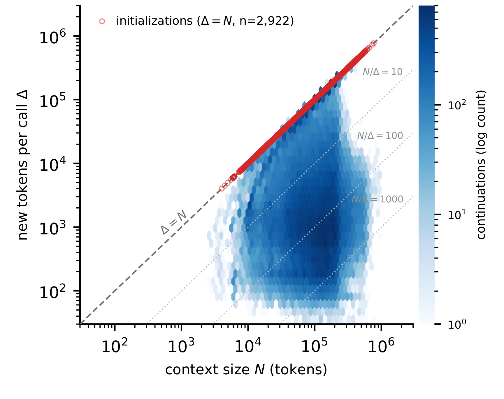
Figure 2 的红色空心点落在 $\Delta=N$ 对角线上，代表 2,922 次 initialization/rebuild；蓝色 hexbin 则集中在对角线下方一到三个数量级，说明 continuation 的新内容远小于完整上下文。横轴可延伸到 $10^6$ tokens，纵轴常停留在数百至数万 tokens；$N/\Delta=10,100,1000$ 的参考线让“工作放大”可直接读出。这个分布支持双路设计，但不能推出所有 Agent 产品都相同：个人 trace 集中于 coding agents，public autonomous trace 的 median append 更大。系统收益应按本地 $N/\Delta$、state hit 和 KV hit 分布重新估算，而不是照搬论文中位数。
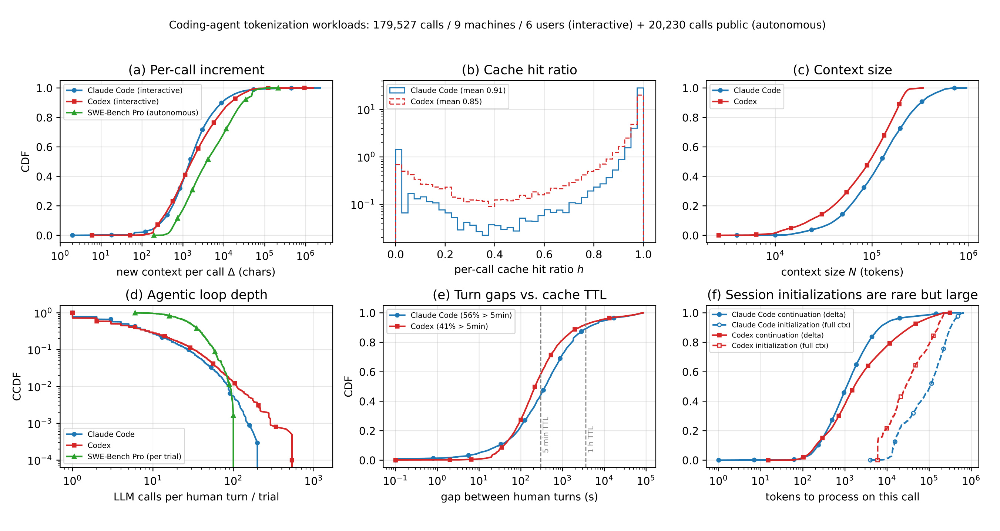
Figure 15 把联合分布拆成六个边际证据。(a) 显示 autonomous SWE-Bench Pro 的 append 相对更重；(b) 的 cache-hit 质量集中于高值但 Claude Code/Codex 均仍有低命中尾部；(c) 给出 context 的长尾；(d) 说明一次人类 turn 可触发数十甚至上百次 LLM calls；(e) 将 turn gap 与 5 分钟、1 小时 TTL 对齐，42–55% 的人类间隔越过 5 分钟；(f) 则把 continuation 的 delta 与 initialization 的 full context 拉开约两个数量级。六项合在一起才支撑“token state 可以比 KV state 活得更久”的设计，而不是仅凭高 cache hit 就假设 session affinity 永远存在。
2. 方法
2.1 会话路由、状态存储与参考回退
TokTier 位于 request router 与 model engine 之间，按 tokenizer 内容哈希固定规则与词表。state hit 要求新文本兼容旧前缀；记录保存 IDs、source byte spans、版本哈希及位置索引，派生索引延迟更新并原地 splice，使 bookkeeping 随窗口而非完整 context 增长。
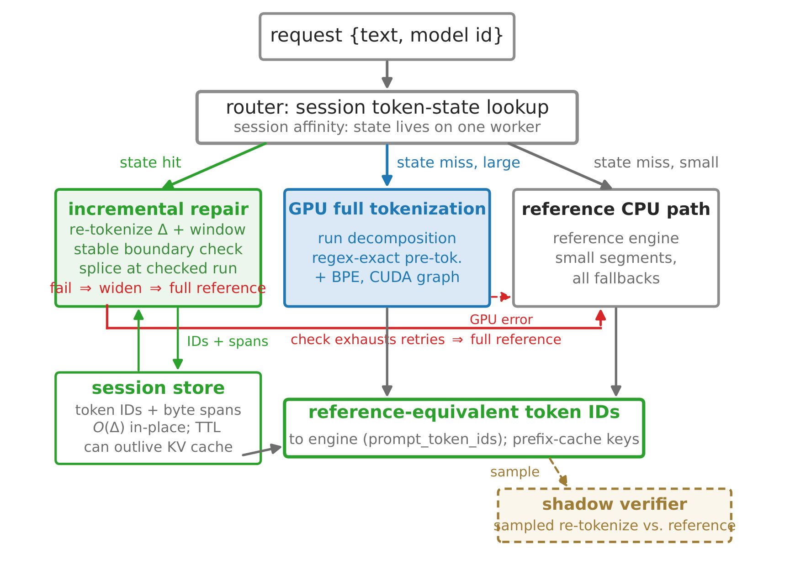
Figure 3 展示三路分流：state hit 做 incremental repair；大 state miss 走 GPU full tokenization；小输入、不支持 family、GPU/背压异常或 repair 耗尽均回到冻结的 CPU reference。GPU 尚不返回 spans，初始化可修复 state 仍需参考路径补齐。session store 依靠 worker affinity，迁移只增加 state miss；shadow verifier 抽样重分词并隔离 divergence，覆盖 fresh-process 测试看不到的历史相关错误。
核心不变量是：快路失败只能扩窗、全量重分词或 CPU 回退，不能改变 token IDs。 因而 tail latency 也必须完整计入 fallback 与 backpressure。
2.2 稳定边界证书与增量修复
符号解释：$A$ 为旧文本，$B$ 为追加，$\operatorname{tok}$ 是参考分词，$\Vert$ 是拼接；右侧字符可能改变 pre-tokenizer 边界及 BPE merge。
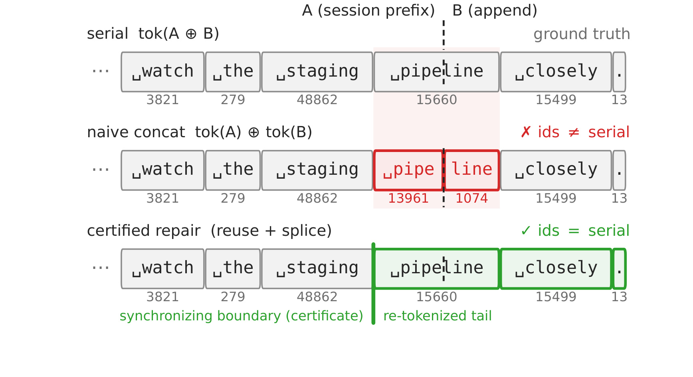
Figure 4 用 Llama-3.1-8B 的真实 IDs 展示 seam：完整分词把带前导空格的 “pipeline” 编为 15660，分开处理 “pipe” 与 “line” 再拼接却得到 13961、1074，连带改变 cache key。repair 默认重分词旧尾 $w=512$ 字符与追加，并寻找 fresh/cached 中位置和 ID 均相同的 run。接受还要求至少两个 tokens、覆盖字符数超过最长 token（该 family 为 128），并包含能重置 pre-tokenizer 状态的字符类转换；否则扩窗。digit grouping、whitespace lookahead、newline absorption 都说明固定 overlap 或仅看长度不可靠。
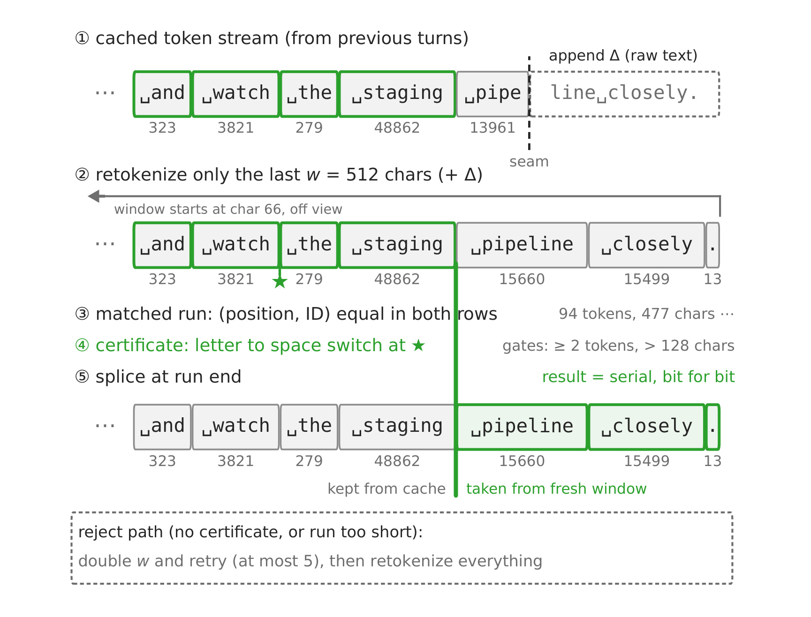
Figure 5 分五步：读取旧 stream；重分词尾部 $w$ 与 $\Delta$；找到图中 94-token/477-char equal run；以 letter-to-space 转换和长度门槛认证；在 run 末端 splice。证书不足便扩窗，最多五次后全量回退。漏掉可复用边界只会变慢，错误接受才会破坏精确性。复杂度为：
符号解释：$N$ 为完整 context，$\Delta$ 为新增字符，$w$ 为窗口；前式依赖索引原地维护，数组复制会重新引入 $O(N)$ 成本。pipeline 为：
符号解释：$G$ 生成有序单元，$E$ 编码单元，$E^{*}$ 拼接，$F$ 为 pipeline；关键是 $E$ 无跨单元状态。
符号解释：$U,V$ 为前端单元序列；证书保证局部与全局单元一致后，BPE 输出才可拼接。
符号解释：$S$ 为全文，$A_i$ 为证书间的相同块，$K$ 为块数；C1 禁止跨界，C2 要求 kind、payload、interval 一致。
符号解释：$L,R$ 为相邻记录；$[b_i,c_i)$ 的 span/ID 相同，故在 $c_i$ 与 $b_i$ 切分等价。
2.3 regex-exact run decomposition 与分段 GPU BPE
state miss 仍要全量分词。GPT-family 的 leftmost-first regex 原本有 match 串行依赖；TokTier 将字符归为 letter、number、whitespace、other，形成同类 maximal runs。piece start 只依赖 run offset、至多四字符 lookback，以及 run start、首个非 CRLF、最后 CRLF 摘要，故可用并行分类与 prefix scans 求得。o200k 另处理 case/contraction/Unicode mark，DeepSeek 多层 splitter 也折叠为 predicate。
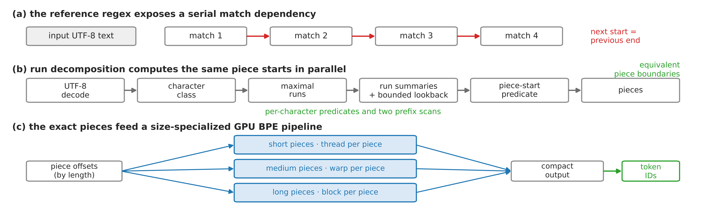
Figure 6 上层是 regex 串行链；中层用 UTF-8 decode、字符类、maximal runs、摘要与 bounded lookback 生成相同边界；下层按 piece 长度分成 thread/register、warp、shared-memory block。等价性依赖冻结 Unicode/tokenizer tables，并以 split-level test 单查边界。BPE 并行合并最左不重叠的最低 rank pair，只重查邻接 pairs；device 内计数和 CUDA graph 将 host sync 从八次减至两次。瓶颈仍是 merge dependency chain，激进 rank plateau 会 divergence。
2.4 能力边界、运行时验证与 vLLM 接口
GPU 路覆盖 cl100k、o200k 与 DeepSeek patterns；added-token 先做 leftmost-longest 提取，NFC 保留 CPU。17 个 family 中 15 个可 repair，其余全量；超过 2KB 的大 state miss 才上 GPU。IDs 通过 vLLM prompt_token_ids 交付，text/ID prefix 可共享 key，但 99.84%/99.94% 命中仍要求逐版本复测。
保证链包含 family splice theorem、内容哈希冻结后的差分 campaigns 与在线 5% shadow verifier（离线 100%）。verifier mismatch 按 hash 隔离；它曾发现生产 Rust tokenizer 在先编码 4,096 字符以上 prefix 后出现 history-dependent IDs，fresh-process 与长度检查均抓不到。
3. 实验结果
3.1 Exactness：零分歧的证据强度与边界
平台为双路 EPYC 9115（32 cores、无 SMT）与四张 RTX PRO 6000；CPU 做 NUMA pinning。reference 为冻结的 HuggingFace fast tokenizer，另测 fastokens、Gigatoken、LoPT；近似 tokenizer 不参加主比较。
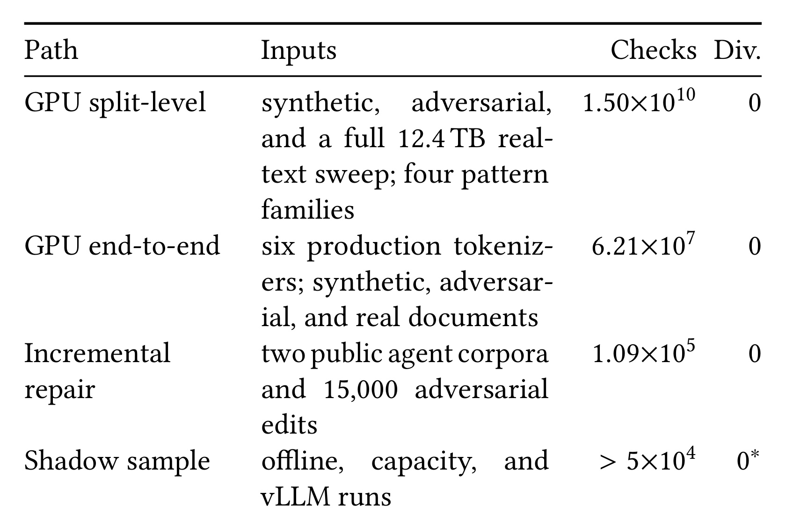
Table 1 分四层验证：四个 pattern families 的 split-level synthetic/adversarial/12.4TB real-text sweep 共 $1.50\times10^{10}$ checks；六个 production tokenizer 的端到端 IDs 共 $6.21\times10^7$；两个公开 agent corpus 加 15,000 adversarial edits 的 repair 共 $1.09\times10^5$；shadow sample 超 $5\times10^4$。admitted 配置 divergence 均为 0，但只约束冻结 artifact；Unicode 表、snapshot 或运行历史变化后必须重新 admission。
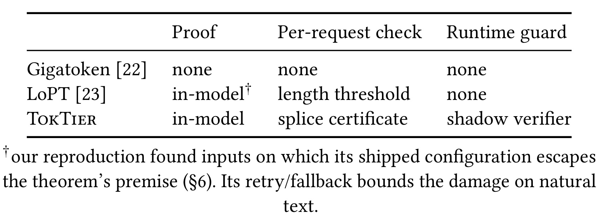
Table 6 将 proof、per-request check、runtime guard 拆开：Gigatoken 三项皆无；LoPT 有 in-model 论证与长度阈值，但复现发现 shipped 输入可越出 theorem premise；TokTier 用 family argument、splice certificate、shadow verifier 闭环。它仍非 Rust/Python/CUDA 全栈形式化验证，sampling 也只能概率发现缺陷；因此只能说冻结配置在报告 campaigns 中与 reference 一致，不能说任意 tokenizer 永久精确。其优势是任一层失败都有可审计的降级动作，不会静默改变输出 IDs。
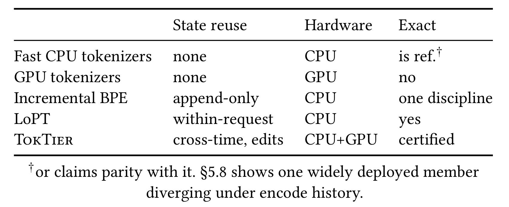
Table 7 表明差异不只是 GPU：fast CPU/GPU tokenizer 无跨请求 state；Incremental BPE 只覆盖 append-only merge；LoPT 只做请求内 chunking；TokTier 才结合跨时间 state、mid-context edits 与 CPU+GPU 路由。fast CPU 的 “is ref.” 脚注还提醒实现会受 encode history 影响。工程重点因而是 version registry、session state、certificate、fallback、runtime adjudication 的契约链，而非简单换库；这也把性能收益与正确性责任放在同一部署边界内，便于逐项审计。
3.2 Incremental repair：延迟、crossover 与 fast-path coverage
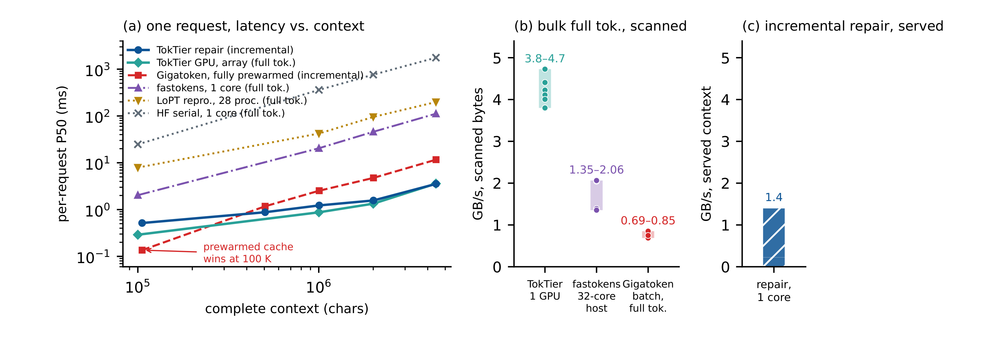
Figure 7(a) 同轴比较 continuation repair、fresh GPU encode 与全量 CPU，但前者计一轮 append，后者计 fresh request。100K 时预热 Gigatoken 最快，约 100K–500K 后 repair 因少扫描而领先。(b) 按 physically scanned bytes：GPU 3.8–4.7GB/s、32-core fastokens 1.35–2.06、empty-cache Gigatoken 0.69–0.85；(c) 按 delivered context，repair 单核在 3M 达 1.4GB/s。两种吞吐不可混用，否则会把复用收益误称为物理带宽；复现必须同时列出二者。
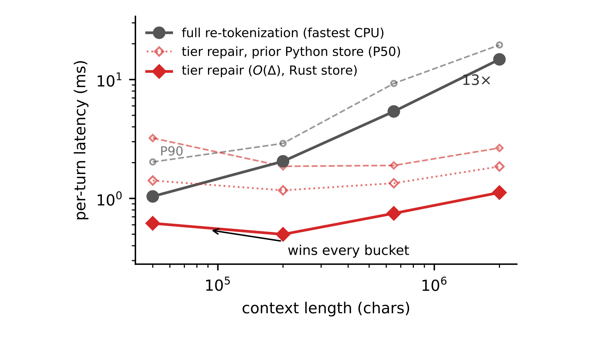
Figure 8 在 12,674 个 public-trace appends 上比较 Rust store、旧 Python store 与最快 CPU full path。Rust P50 在 100K–3M 保持 0.5–1.1ms，1M–3M 比全量路径约快 13×；Python 因 splice 复制数组而增长更明显、P90 更高。结果支持工程成本接近 $O(\Delta+w)$，但右端仍受 prefix check、append 分布与 bootstrap 影响；复现应分开首个与稳态 append。这些 bucket 保留完整 CPU 基线，能把 store 复制随 $N$ 的增长与 tokenizer 本身的增长分离，是判定旧 Python 实现瓶颈的关键对照证据。
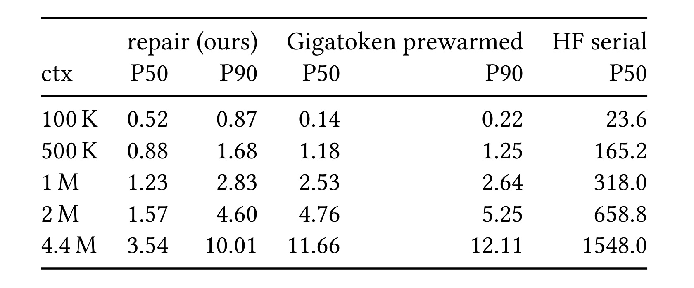
Table 2 给出相同 Qwen3 session texts、每 shape 24 samples 的 P50/P90。100K 时预热 Gigatoken 的 P50 0.14ms，优于 repair 0.52ms；500K 时 repair 0.88ms 已领先 1.18ms；1M 和 2M 时 repair 分别为 1.23/1.57ms，约为 cache 2.53/4.76ms 的 2.1×/3.0×优势；4.4M 仍为 3.54 vs 11.66ms。HF serial 从 23.6ms 增长到 1548ms。结论应是 repair 在本文 workload 的大 context、小 append 区域领先，而非所有长度都优于强 cache baseline；低 context 的专用 cache fast path 仍有保留价值。
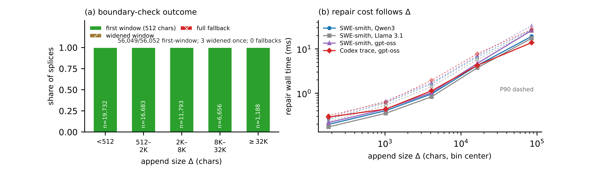
Figure 9(a) 统计 56,052 次真实 splices：56,049 次在默认 512 字符窗口首试接受，3 次只扩窗一次，0 次 full fallback，覆盖从 <512 到 ≥32K 的 append buckets；adversarial 输入仍可构造 fallback，所以 0 不是理论保证。(b) 在 Qwen3、Llama 3.1、gpt-oss 与 public Codex trace 上，repair wall time 随 $\Delta$ 从几百字符到近 $10^5$ 字符上升，P50/P90 形态一致。该图把“窗口证书经常可找到”与“找到后成本跟 append 走”同时实证化，并表明不同 family 的斜率接近但基线并非完全相同，迁移时仍需分 family 复测。
3.3 GPU full tokenization：kernel 很快，接口与 normalizer 仍有尾部
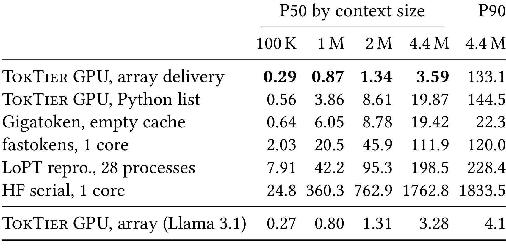
Table 3 采用更严格的 fresh-sample protocol，每个样本只 encode 一次。Qwen3 的 GPU array delivery 在 100K/1M/2M/4.4M 字符处为 0.29/0.87/1.34/3.59ms；1M 比 fastokens 20.5ms、LoPT repro 42.2ms、HF 360.3ms 显著低。Python list 在 1M 已升到 3.86ms，4.4M 为 19.87ms。更关键的反例是 Qwen3 4.4M P90 达 133.1ms，因 4/20 inputs 未通过 NFC quick check 而落到 CPU renormalization；没有 normalizer 的 Llama 3.1 同 shape P90 仅 4.1ms。平均 GPU 速度不能遮蔽 normalizer slow branch。
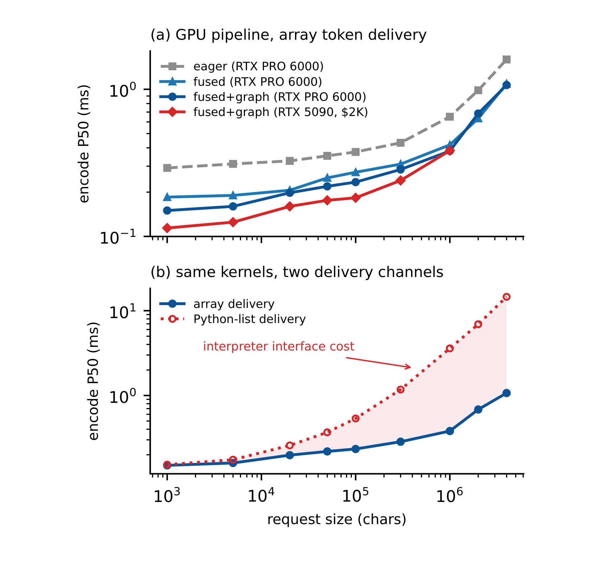
Figure 10(a) 显示 array output 下 eager、fused、fused+graph 在三个数量级请求长度上的 P50；consumer RTX 5090 甚至比 server card 更快，支持该 kernel 更受时钟和依赖链而非总带宽约束。(b) 保持同一 fused+graph kernels，只改交付通道，array 曲线至百万字符仍接近亚毫秒，而 Python list 逐渐升到十毫秒级，红色阴影就是 interpreter interface cost。服务接入若仍要求 list[int]，继续优化 CUDA kernel 的收益会被 host object materialization 吞掉；应优先提供 array/zero-copy token-ID 接口与 GPU span export。
3.4 Burst tail 与容量：系统结果不能冒充等资源效率
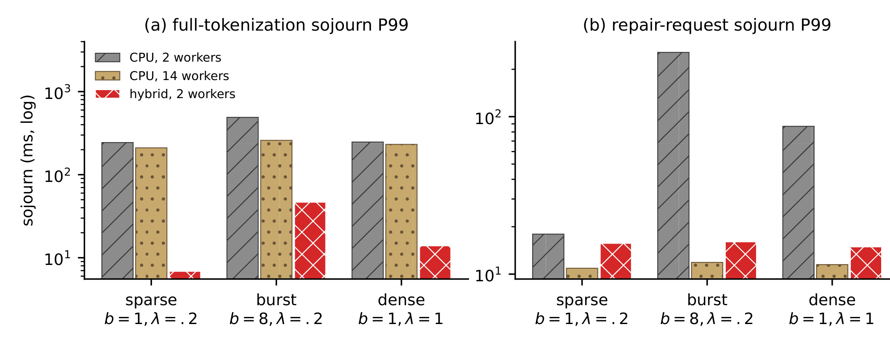
Figure 11 的左 panel 看 full-tokenization sojourn P99：CPU 从 2 workers 增到 14 workers 只能移动排队膝点，单次大初始化的 service-time floor 仍在数百毫秒；hybrid 两 worker 将 sparse/dense 场景压到个位或十几毫秒。右 panel 看 repair-request P99：低 worker 的初始化工作会把 continuation 一并拖慢，14-worker CPU 或 hybrid 才维持约十几毫秒。它说明混合 workload 必须分别测两类请求又观察共享队列，单请求 P50 无法预测 burst tail；sparse、burst、dense 三种到达形态也不能仅用同一平均 QPS 代替。
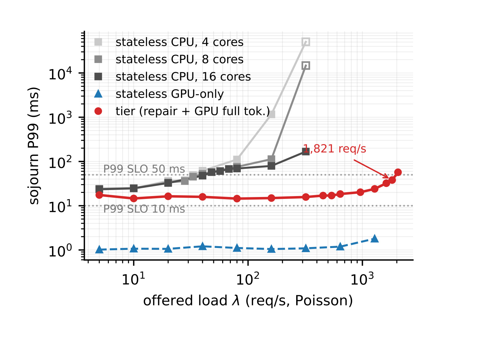
Figure 12 以 60 秒 Poisson steady-state sweep 测 P99。4/8/16-core stateless CPU 在 50ms 目标下约只能维持 33/33/40 req/s；tier 的四个 repair cores 加一 GPU 达 1,821 req/s，GPU-only 在 10ms 目标下也能到约 1,280 req/s。空心 markers 是已经 backlogged 仍如实绘出的点。论文明确承认 45× 比值比较了不同硬件资源，不能分离 session state 与 GPU 的贡献；更公平的用途是容量规划：若继续全量传文本到 GPU，字符流量约为 tier 的 55×，而 hybrid 用 state 减少了搬运与排队，同时需计入 router GPU 的独立成本。
3.5 vLLM in the loop：TTFT 改善存在，也存在 null、反转与 KV 容量上限
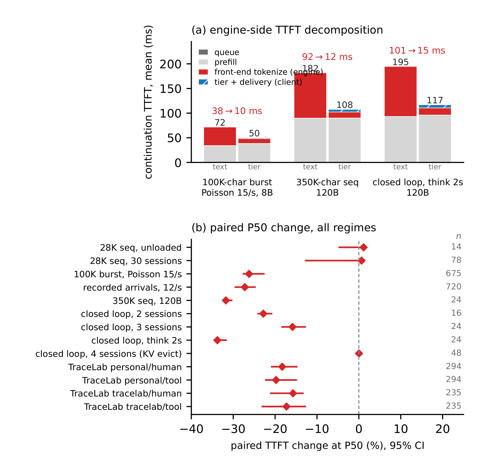
Figure 13(a) 用 vLLM /metrics 分开 queue、prefill、engine tokenization 与 client tier+delivery；三种负载下前端段由 38/92/101ms 降至 10/12/15ms，而 queue/prefill 近似不变。(b) 的 paired 95% CI 显示 28K unloaded 有点跨零，多数 100K/350K/closed-loop 改善 16–34%，四 sessions 触发 KV eviction 后归零。recorded arrivals 的 P50/P99 改善 27%/23%，P90 却反向 +28%，说明 GIL、batch shape 与分位数必须一并报告，不能只取有利指标。
3.6 状态成本、TTL 与 rate normalization
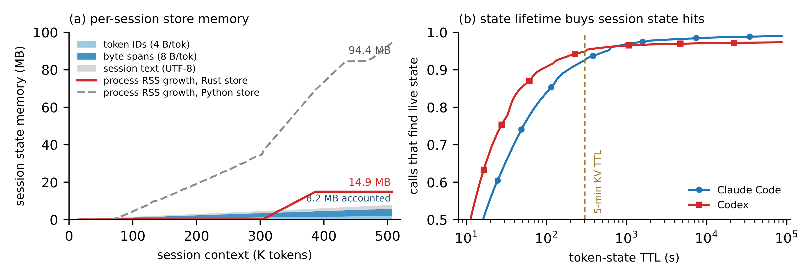
Figure 14(a) 拆出 4B/token IDs、8B/token spans 与 UTF-8 text，合计约 16 bytes/token；500K-token session 的 accounted state 为 8.2MB，Rust RSS 14.9MB，旧 Python store 94.4MB。(b) 把 TTL 从 5 分钟延至一小时，可让额外 2–6% calls 命中 live state，总 hit 97–98%，再延至一天收益变小。总成本仍取决于 live-session 分布、复制、淘汰、租户隔离与迁移，不能只乘单 session MB。
平均成本的 rate normalization 可写为：
符号解释：$\mathbb{E}[t_{\mathrm{tok}}]$ 是每请求 CPU 分词毫秒，$r$ 是单推理 GPU 的请求率；单位抵消后得到每千 GPU 所需 CPU cores，但不含 topology、batching 与模型规模。
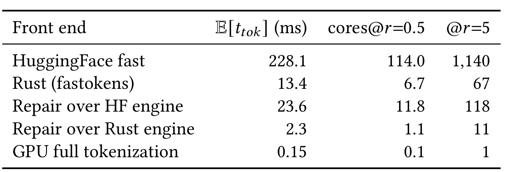
Table 8 在 153,529 个 token accounting 可用的 calls 上给出均值：HF fast 228.1ms/request，fastokens 13.4ms，repair over HF 23.6ms，repair over Rust 2.3ms，GPU full tokenization 0.15ms。取 $r=0.5$ 时对应每千 GPU 114.0、6.7、11.8、1.1、0.1 cores；$r=5$ 时线性放大十倍。GPU 行本质不是 CPU core 消耗的同类资源，且 router GPU provisioning 另算，所以该表适合做“请求速率变快时前端会否扩张”的敏感性分析，不适合直接导出集群 BOM；多租户峰值和副本冗余还需另算。
3.7 大追加的失效区与未认证探索路线
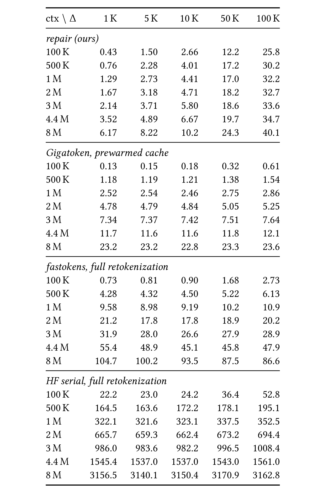
Table 5 在同一 transcript stream 上把 $\Delta$ 从 1K 扫到 100K，并测试七种 $N$。1M context 的 repair 由 1.29ms 升到 32.2ms，显示大追加受 $O(\Delta)$ 主导；预热 Gigatoken 因 content cache 只由 2.52 升至 2.86ms。$\Delta=1K$ 时 repair 在 500K 后领先，5–10K crossover 移至约 2M，50K 时 cache 到 8M 仍不差，100K 时全区间领先。50K/100K 超过实测 P99=38K，虽是 tail stress，路由仍须处理；这组固定 stream 控制了内容差异，crossover 才能归因于追加尺度与方法成本。
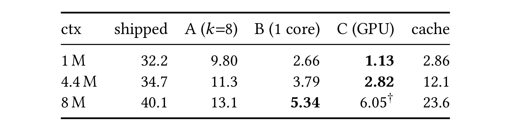
Table 10 在 $\Delta=100K$ 比较 shipped repair、8-process A、cache-window B、GPU rebuild C 与预热 cache。1M/4.4M 时 C 最快（1.13/2.82ms）；8M 时 B 为 5.34ms，略快于 GPU 6.05ms，shipped 为 40.1ms。A 的 1,104 samples、6,384 seams 均 exact，但调度与串行 seam matching 限制收益；B/C 虽有百万 token 差分检查，仍未完成 admission battery。它们只是 prototype，能说明 crossover 可移动，不能宣称未测区已有稳定边界，更不能替代 shipped 路径或 admission 流程。
4. 总结
4.1 我的判断
TokTier 把 Agent 请求变成 serving abstraction：continuation 复用 token state，initialization 用 exact GPU path，不确定性回到 reference。“精确”由 family theorem、请求级 certificate、差分测试和 shadow verifier 共同承担；Unicode skew、history bug、P90 反转、NFC 慢路与大追加 crossover 又为性能数字给出边界。
4.2 工程启发与复现顺序
- 先统计本地 $N,\Delta,h$、state miss、turn gap 与追加尾部；context 短或 affinity 弱时不必上复杂 tier。
- 先实现带版本哈希的 state、窗口修复和全量 fallback，再逐 family 加 certificate，不能以固定 overlap 上线。
- 分别测试 split boundary、end-to-end IDs、replayed edits、history-dependent shadow；Unicode 表从 reference artifact 探测。
- 分开测 continuation、fresh initialization、burst P99、engine-in-loop TTFT 与 scanned/served 口径，保留 null 和反向结果。
4.3 局限与后续跟进
局限有五项：个人 workload 仅六名 coding-agent 用户；GPU encoder 尚不原生输出 spans；15/17 family coverage 与 WordPiece/NFC/added-token 慢路会改变覆盖率；多节点下的 affinity、复制、租户隔离、TTL、背压未完整评测；45× 又是异构容量结果，并非等资源效率。
后续优先：复跑 92,484 splices、15,000 edits 与 history-seeded campaign；实现 GPU span export 和 array handoff，复测 4.4M NFC 尾部；在真实 router 上 shadow 测试 delta-aware routing，并保留 reference fallback 与按 snapshot admission。